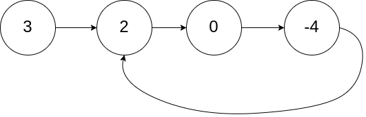
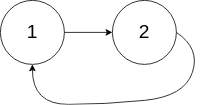
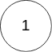
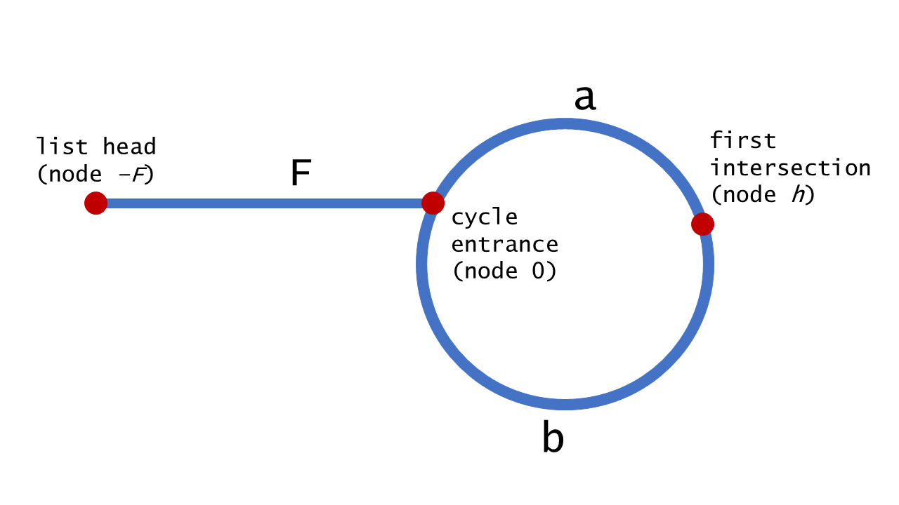

Given a linked list, return the node where the cycle begins. If there is no cycle, return null.
To represent a cycle in the given linked list, we use an integer pos which represents the position (0-indexed) in the linked list where tail connects to. If pos is -1, then there is no cycle in the linked list.
Note: Do not modify the linked list.
Input: head = [3,2,0,-4], pos = 1
Output: tail connects to node index 1
Explanation: There is a cycle in the linked list, where tail connects to the second node.
Input: head = [1,2], pos = 0
Output: tail connects to node index 0
Explanation: There is a cycle in the linked list, where tail connects to the first node.
Input: head = [1], pos = -1
Output: no cycle
Explanation: There is no cycle in the linked list.
Follow-up:
Can you solve it without using extra space?
解题思路分析
这是 Floyd’s Tortoise and Hare (Cycle Detection) 算法。

\begin{aligned} 2 \cdot \text { distance }(\text { tortoise }) &=\text { distance }(\text {hare}) \\ 2(F+a) &=F+a+b+a \\ 2 F+2 a &=F+2 a+b \\ F &=b \end{aligned}
这里解释一下：兔子跑的快，相遇时，兔子跑过的距离是乌龟跑过的距离的两倍。兔子沿着环，跑了一圈多，有多跑了 ` ` 才相遇，所以距离是： \(F+a+b+a\)。
这个思路还可以用于解决 287. Find the Duplicate Number。
没想到有这么多环形探测算法！
附加题：尝试其他探测环形算法。
参考资料
Given a linked list, return the node where the cycle begins. If there is no cycle, return null.
To represent a cycle in the given linked list, we use an integer pos which represents the position (0-indexed) in the linked list where tail connects to. If pos is -1, then there is no cycle in the linked list.
Note: Do not modify the linked list.
Example 1:
Input: head = [3,2,0,-4], pos = 1 Output: tail connects to node index 1 Explanation: There is a cycle in the linked list, where tail connects to the second node.

Example 2:
Input: head = [1,2], pos = 0 Output: tail connects to node index 0 Explanation: There is a cycle in the linked list, where tail connects to the first node.

Example 3:
Input: head = [1], pos = -1 Output: no cycle Explanation: There is no cycle in the linked list.

Follow-up:
Can you solve it without using extra space?
1
2
3
4
5
6
7
8
9
10
11
12
13
14
15
16
17
18
19
20
21
22
23
24
25
26
27
28
29
30
31
32
33
34
35
36
37
38
39
40
41
42
43
44
45
46
47
48
49
50
51
52
53
54
55
56
57
58
59
60
61
62
63
64
65
package com.diguage.algorithm.leetcode;
import com.diguage.algorithm.util.JsonUtils;
import com.diguage.algorithm.util.ListNode;
import java.util.Arrays;
import java.util.Objects;
import static com.diguage.algorithm.util.ListNodeUtils.build;
/**
* = 142. Linked List Cycle II
*
* https://leetcode.com/problems/linked-list-cycle-ii/[Linked List Cycle II - LeetCode]
*
* @author D瓜哥, https://www.diguage.com/
* @since 2020-01-28 08:52
*/
public class _0142_LinkedListCycleII {
/**
* Runtime: 1 ms, faster than 32.38% of Java online submissions for Linked List Cycle II.
* Memory Usage: 41.2 MB, less than 6.32% of Java online submissions for Linked List Cycle II.
*/
public ListNode detectCycle(ListNode head) {
if (Objects.isNull(head)) {
return null;
}
ListNode intersect = getIntersect(head);
if (Objects.isNull(intersect)) {
return null;
}
ListNode pointer1 = head;
ListNode pointer2 = intersect;
while (pointer1 != pointer2) {
pointer1 = pointer1.next;
pointer2 = pointer2.next;
}
return pointer1;
}
private ListNode getIntersect(ListNode head) {
if (Objects.isNull(head)) {
return null;
}
ListNode tortoise = head;
ListNode hare = head;
while (Objects.nonNull(hare) && Objects.nonNull(hare.next)) {
tortoise = tortoise.next;
hare = hare.next.next;
if (Objects.equals(tortoise, hare)) {
return tortoise;
}
}
return null;
}
public static void main(String[] args) {
_0142_LinkedListCycleII solution = new _0142_LinkedListCycleII();
ListNode l1 = build(Arrays.asList(3, 2, 0, -4));
l1.next.next.next.next = l1.next;
ListNode listNode = solution.detectCycle(l1);
System.out.println(JsonUtils.toJson(listNode));
}
}